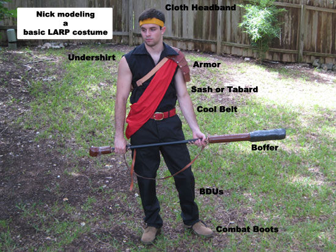

Introduction
Are you going to your first LARP and have no idea what to wear? No fear, Embercostumes is here! Or at least, we've been there.
Okay, enough cheese. The quality of costumes ranges from LARP to LARP and from person to person, but with just a little bit of work,
your character can look cool without causing you too much discomfort.

Parts of the Costume and Their Uses
Headband
This isn't necessary, but it's nice to have something to soak up your sweat and add identity to your character.
Does your character have a certain tribe or a favorite color?
Undershirt
This keeps you from getting sunburned or freezing depending on the time of year, soaks up your sweat,
and keeps you from being naked. Pretty important. This can be made cheaply by simply tearing the
sleeves off of plain colored cotton collared shirt, ripping off the buttons, and sewing up the front. Or,
you can use somthign like
Butterick B5008,
which is what I used for Nick's example costume below, sans sleeves.
Sash or Tabard
Again, this isn't necessary but will give your character some identity. Some LARPs have rules about what tribe or family
can wear what, but most of the time they're pretty forgiving to newbs.
Cool Belt
This is important. It keeps your pants up and holds any pouches you might want to dangle from your belt. The belt pictured below is actually
Nick's Edmund belt that John made for him for our in-progress Narnia costumes. It's totally cool to reuse other costume parts, or you can just use any old
leather belt you have.
Boffer
You need something to hit the other players with, of course. See the
Boffers page for more information on these.
BDUs
These tough, long pants will keep you from getting as many bug bites and have lots of pockets for carrying important things around whiel you're
out in the woods LARPing. Like bug spray. Of course if this isn't appropriate for your character (Like a mermaid or something) then you have to do something else. But if this is your first LARP,
I strongly suggest you pick a character who can wear pants.
Combat Boots
You'll most likely be doing lots of walking, so be sure that they are comfortable. Combat boots are also excellent protection against snake and
bug bites, come in waterproof models to keep your feet dry, and will last much longer than costume boots. A layer of heat-gear under armor socks can make these
really pleasant to wear.
Back to Articles Archive